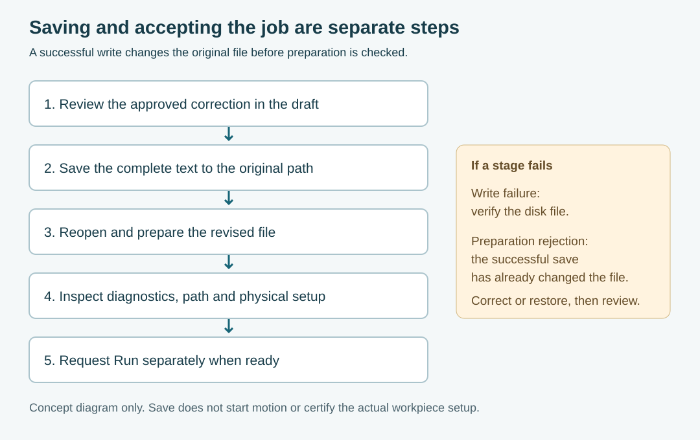

RADONIX · ROUTERXYZ+TC · CHAPTER 19
Operator Manual · English · 9 October 2026
Editing a G-code File
Make an approved correction to the correct source file, understand when the original file changes, and check the newly prepared job before requesting any movement.
Expanded draft for review. This chapter explains the editing workflow. It does not teach an operator to design a machining program or approve unfamiliar cutting conditions. Use the approved job information for the change itself.
19.1 Understand what editing changes and when to use it
The G-code editor changes the text of a machining file. That text is the source from which the application prepares movement and equipment instructions. Editing is therefore different from panning the preview, selecting a source row, adjusting the live feed percentage or choosing a new start line. A saved text change can affect this job and later uses of the same file.
Use the editor for a clearly defined, approved correction. For an operator with limited programming knowledge, the correction should identify the exact file, the text to change and the replacement to use. You should also know why the change is needed and what result must be checked afterwards. The ability to type a new value is not enough to establish that it is suitable for the machine.
Separate the editing task from the machining decision
This chapter explains how to navigate the editor, control a text change, save it and verify the result. It does not ask you to invent coordinates, select a cutter from unfamiliar material requirements or reconstruct a damaged program. Those decisions belong to the person responsible for preparing or approving the job.
A seemingly small change can have a large effect. A missing minus sign can place a movement on the other side of a reference. A different tool number can call another cutter. A changed instruction near the beginning may influence many later lines. Review the full approved correction, not just how many characters it contains.
| Intention | Relevant workflow | Does it edit the source file? |
|---|---|---|
| Inspect a feature or text row | Main source viewer and 3D preview. | No. |
| Start at an approved later entry | Start Line procedure in Chapter 18. | No. |
| Adjust an approved live cutting feed | Main-program feed control. | No. |
| Correct approved program text | Edit GCode, then Save and reload review. | Yes, when saved. |
| Change machine-control logic | The separate authorized PLC workflow. | Not through this G-code editor. |
Think in three stages
While the editor is open, you work on an editable draft of the loaded document. Save writes that draft to the original file. The application then opens and prepares the saved file again. These are separate events: a draft can contain mistakes, a saved file can fail preparation, and a prepared file can still be unsuitable for the actual workpiece.
Saving does not request Run. However, it changes the disk file before the subsequent program preparation establishes whether it is accepted. Do not expect the old file to remain automatically available if the revised program is rejected. The later sections explain how to preserve an approved revision through the shop's file-control procedure.
Example: the part is in the wrong place on the table
Before editing coordinates, establish whether the stock was placed at the intended datum and whether the correct work origin was selected. A setup error may need a setup correction rather than a file change. Changing program text to compensate for an unexplained setup can create a second problem for the next workpiece.
Before opening the editor, be able to state the task in a sentence: “In this approved file revision, replace this exact text with this approved replacement.” If the task is only “make the part come out right,” obtain the missing machining guidance first. A controlled editing workflow depends on a defined correction and a defined check of its result.
19.2 Open the correct document in a settled machine state
Edit GCode opens the source associated with the document currently held by the interpreter. It requires a document with a known filename. The editor begins with that loaded document's text and uses the associated full file path as its save destination. Confirm both before making any change.
The command is unavailable during program loading, a connection transition, an active main program or busy controller operation. A machine that appears stationary may still be in a program-managed wait, tool preparation or another active operation. Resolve that state through its proper procedure before attempting to edit.
Do not discard a paused job casually
If the file belongs to a partly completed job, decide whether editing and reloading are appropriate for that workpiece. Reloading replaces the prepared program and clears the pending selected-start request. It is not a way to preserve a paused cut while quietly changing one of its future instructions.
Use Chapter 17 to establish the interruption state. If an edit is approved, record the actual work completed and the restart decision that will need review afterwards. Do not reset an unresolved tool operation just to make the editor available.
| Check | What to establish | Why it matters |
|---|---|---|
| Machine activity | The relevant operations have settled and editing is available. | Stillness alone does not establish an inactive program. |
| Document identity | The loaded document is the intended job and revision. | The editor does not ask you to select a different file when it opens. |
| Filename | The full destination path is correct. | Save writes back to that original path. |
| Approved correction | The location, original text and replacement are known. | Editing controls cannot choose suitable machining conditions. |
| Partly completed work | The effect of replacing the prepared job is understood. | A later restart must be reviewed against the new source. |
| Revision preservation | The approved earlier revision is available under the shop's file-control procedure if required. | The dialog has no Save As step or automatic revision archive. |
Check the title after the editor opens
The editor title includes the full source path. Read it, especially when two folders contain files with the same short name. A training copy and a production file may look identical in the text area while having very different consequences when saved.
The application opens the loaded text; it does not first reread the disk file specifically for the editor. If another person or program has changed that same disk file since it was loaded, the editor may still contain the older loaded text. Avoid simultaneous editing of the same file, and reload the intended revision before starting this workflow when external changes are known.
Example: two files have the same name
The production folder and a training folder both contain a file called Panel.nc. The text looks familiar, but the editor title points to the production folder. If the exercise was intended for the training copy, cancel before saving and open the correct file through the ordinary loading procedure.
A source document retained after a preparation rejection may still be editable when the other conditions permit it. This allows an approved correction to be made without implying that the rejected program is runnable. Conversely, a missing filename or unavailable document can prevent this editor from opening even if a previous filename is remembered by the operator.
If the command remains unavailable, identify the unmet condition rather than repeatedly clicking it. Record the current loading, connection and operation state. Once the right document is open in the editor, keep the task confined to the approved correction and verify the destination again before Save.
19.4 Make one controlled correction and inspect the replacement
Make the approved change in a small, reviewable step. Select the exact text to replace, enter the approved replacement and read the complete affected line afterwards. Then check the neighboring lines. This is easier to verify than making many unrelated changes and trying to remember all of them before Save.
When text is selected, typing or pasting replaces the selected range. With no selection, text is inserted at the caret. Backspace and Delete remove text on different sides of the caret, and a selected range can be removed as a whole. Check the selection before each destructive text action.
Use the native editing controls carefully
The editor retains native text selection, clipboard and undo/redo behavior. Copy leaves the selected text in place; Cut removes it into the clipboard; Paste inserts the clipboard content or replaces a selection. Undo reverses an available recent editing action, and Redo reapplies an available undone action. These operate on the open draft, not on already performed machining.
| Action | Possible unintended effect | Review immediately |
|---|---|---|
| Replace a number | A sign, decimal point or adjacent word is included or omitted. | The complete approved value and its surrounding instruction. |
| Paste text | Extra rows, labels or punctuation enter with the clipboard content. | The full pasted range, not just its first visible line. |
| Delete selected text | The selection includes a line break and joins two instructions. | The resulting line boundaries and neighboring text. |
| Insert a row | All subsequent physical line numbers change. | Any correction list or restart instruction based on old line numbers. |
| Undo or Redo | The action affects a larger editing step than expected. | The actual restored text before proceeding. |
| Select the whole document | The next typed character or paste can replace the entire program. | Selection extent before typing. |
Do not treat the clipboard as an approved program source
If the correction is supplied in a message or document, paste only the approved source text. Explanatory labels, quotation marks and formatting characters may look harmless in a message but do not belong automatically in the machining file. Inspect what the editor actually received, including signs, spaces, line breaks and any text beyond the right edge.
Prefer an exact approved replacement over retyping a long unfamiliar instruction from memory. If the supplied text is ambiguous, resolve it before saving. Do not choose between two possible values by seeing which one the editor colors or accepts.
Example: replacing only an operation comment
The approved task is to correct a descriptive comment. Select only the intended comment text and preserve its delimiters and neighboring instructions. After the change, verify that you did not remove the closing parenthesis or join the comment to another line. Even a non-motion wording correction should be checked in its actual source context.
Understand the limits of Undo
Undo is useful while editing, but it is not a revision archive. A newly opened editor starts with a fresh document and no history of changes made in a previous editor session. Once a successful save closes the window, reopening the file does not give you an undo step back to the old disk revision.
If you are unsure whether the open draft still matches the intended correction, stop editing and compare it with the approved original information. Before a save has been attempted, Cancel can discard this draft and let you begin again from the loaded source. After a failed save attempt, the disk state also needs review, as explained later in this chapter.
Keep a short record of the changes made, especially if there is more than one approved correction. The record should identify the operation and original/replacement text, not only a line number that may shift during editing. This makes the final review specific and reproducible.
19.5 Use coloring, suggestions and local warnings without treating them as approval
The editor styles different kinds of text to make the source easier to read. Commands, numbers, axis-related words and comments can have different appearances. This visual assistance helps you follow a line, but it is not the interpreter's complete acceptance check and does not prove that an instruction is supported by this machine.
The shared G-code editing profile contains a broader vocabulary than any particular machine configuration may execute. A familiar command can appear in a suggestion list or receive normal coloring even when the job preparation later rejects it or reports that an equipment action is not bound. Always review the saved file's preparation result.
Completion can insert more than the word you chose
The editor can show completion suggestions as you type. While the text area has focus, Ctrl+Space explicitly requests available completions. Some suggestions are simple words; others insert an example instruction containing additional coordinates or feed text.
For example, the profile has movement templates that include zero-valued coordinates and a sample feed. These are editing templates, not calculated values for your part. Accepting one can change more text than the few letters originally typed. Review every inserted word before retaining it, and never use template values as machining recommendations.
| Aid | Useful for | Does not establish |
|---|---|---|
| Text coloring | Recognizing broad categories of source text. | That the machine supports or should execute the instruction. |
| Completion list | Reducing typing and locating known words. | The correct operation, tool or coordinates for the job. |
| Inserted template | Providing a text pattern for a knowledgeable user. | Approved values or a collision-free movement. |
| Local warning marks | Drawing attention to limited text checks. | Complete syntax, geometry, equipment or setup validation. |
| No visible warning | No current displayed diagnostic from the editor's limited checks. | Permission to save or run without review. |
What the built-in local checks cover
The reviewed G-code editor profile checks for excessively long lines and unmatched comment parentheses. It flags lines longer than 1024 characters and parenthesis mismatches. These checks are helpful for obvious text problems, but they do not evaluate the entire machining meaning of the document.
The editor performs document checks when its source is assigned and checks a line when you move to another line. Edits can clear existing marks in affected areas until checks run again. A warning disappearing while you are typing is not proof that the complete document has passed a new preparation cycle.
The dialog's Save operation does not use these local marks as a complete validation gate. It saves the text through the application's file-writing operation, then the application prepares the file again. Consequently, a file can be saved successfully and still be rejected afterwards.
Example: a suggestion adds unexpected coordinates
You intend to correct a command name, accept a movement completion and discover that the line now includes extra coordinate words. Do not keep them merely because they came from the editor. Undo the unintended insertion or restore the exact approved text, then inspect the whole line.
If you are only making a supplied correction, you generally do not need to explore unfamiliar suggestions. Use the exact approved replacement and verify what is present. Do not try commands from the completion list to discover the machine's capabilities.
Keep three checks separate: the editor's text assistance, the application's post-save program preparation, and the operator's physical setup review. Each serves a different purpose. A successful result at one stage cannot replace the later checks needed before movement.
19.6 Review the whole effect of the correction before Save
Before saving, compare the edited text with the approved correction. Read the complete affected instruction and its neighboring lines, not just the changed number. Check that no extra text was inserted through completion or pasting, and that no sign, decimal point, comment delimiter or line break was lost.
The reviewed dialog does not provide a separate before-and-after comparison screen or a revision summary. Keep your correction record and approved reference available. If several changes were authorized, check each one against that record before writing the file.
Use a review that follows the possible machining effect
| Review item | What to compare | Why it matters |
|---|---|---|
| File and revision | The title's path and the approved job information. | A correct edit in the wrong file is still the wrong result. |
| Original and replacement text | The exact approved change, including signs and decimal places. | Small text differences can change movement substantially. |
| Units and coordinate interpretation | Any changed instruction that affects how later values are read. | An early instruction can influence many following movements. |
| Tool and spindle requests | The intended tool, speed and equipment sequence. | Text acceptance does not select suitable cutting conditions. |
| Line boundaries and comments | Complete instructions and correctly bounded comments. | Joining or hiding text can alter what the interpreter receives. |
| Program ending | The intended final movements and end instructions remain present. | An accidental deletion can change the end-of-job sequence. |
| Restart information | Any saved physical line numbers affected by inserted or deleted rows. | A previous selected-start instruction may no longer refer to the same operation. |
Know when a change exceeds the operator's task
If the correction exposes an inconsistency in the supplied program, return it to the person responsible rather than extending the edit yourself. For example, changing one coordinate may suggest that an arc or a later return movement also needs modification. That is a machining-program decision, not a routine text-entry choice.
Similarly, do not remove an unfamiliar equipment instruction simply because it produces a warning. Determine what physical action the job requires and why the instruction is present. The warning may reveal a configuration or equipment issue that cannot be corrected by deleting text.
Example: the corrected value is right, but the sign is missing
The approved replacement includes a negative sign. The digits were entered correctly, but the selected range did not preserve or include that sign as expected. Reading only the digits misses the problem. Read the whole value with its sign and the word that identifies what it controls.
For comment-only changes, still inspect delimiters and line boundaries. The intent may be descriptive, but an incorrectly closed comment can affect nearby source. If line numbers were added or removed, update the correction record so later readers do not use stale physical references.
If the original revision must remain available, establish that preservation before pressing Save. The application's Save writes to the original path and does not first ask where to create a new version. Cancel the draft and use the shop's file-management procedure if the chosen destination is not the one that should be changed.
Finish the review by defining the post-save checks. State which feature, tool requirement, dimension or message should change, and which neighboring operations need comparison. This turns reload review into a specific verification of the correction rather than a glance at whether the preview still looks familiar.
19.7 Save to the original file and wait for the result
Save writes the complete edited document to the original source path shown in the editor title. This dialog does not include Save As, a choice of another destination or automatic version numbering. If a new revision needs a different filename, establish that through the shop's approved file-management procedure before using this editor on it.
The application uses the source's retained text encoding when available. In ordinary terms, it tries to write the text using the character format identified when the file was loaded. There is no operator-facing encoding selector in this dialog. If text characters cannot be saved as expected, treat the result as a file problem to investigate rather than removing unfamiliar text at random.
What happens while Save is pending
Press Save once after the review. The editor becomes read-only and the Save and Cancel buttons are disabled while the write is in progress. This prevents a second button request or a new edit from changing the draft being written. Wait for the reported result instead of repeatedly clicking or closing the application.
If the file write succeeds, the dialog closes with a successful result and the application starts its reopen-and-prepare workflow for that same path. If a handled write error occurs, a message is shown and editing is restored for another decision. The later reload is a separate operation; do not infer its success merely from the dialog closing.
| Stage | What has happened | What is not yet established |
|---|---|---|
| Draft reviewed | The open text has been checked against the approved correction. | The disk file has not changed through typing alone. |
| Save pending | The application is writing the complete text to the original path. | Write success and program acceptance. |
| Write succeeds | The file-writing operation completed successfully. | The revised program may still fail preparation. |
| Reopen/preparation succeeds | The application has prepared the revised file. | Suitability of the physical setup and part quality. |
| Run requested later | A separate machine-operation request is made. | Completion of preparation, positioning or machining. |
Saving is a full-file replacement
The save operation writes the whole editor text, not only the highlighted line or changed characters. A forgotten pasted section elsewhere in the document is part of the saved file too. This is another reason to keep edits controlled and review the full scope before Save.
The workflow does not create an automatic rollback copy or a built-in comparison with external edits made since loading. If the source is shared with another operator or application, coordinate ownership of that file. Saving an older loaded draft can overwrite more recent disk changes if the same path was modified elsewhere.
Example: the editor closes, then preparation rejects the file
The write succeeded, so the revised text is already at the original path. A subsequent geometry error is a preparation failure, not evidence that Save was cancelled. Correct or restore the file through the approved procedure, then reload and review it again.
Use the Save button as the explicit completion action for this workflow. Do not assume that a familiar keyboard shortcut from another text editor provides an equivalent file save here. Likewise, pressing Enter while editing text should not be treated as proof that the file was written. Follow the actual dialog result and subsequent loading state.
Once the write has succeeded, Cancel is no longer an undo for that disk change. Returning to the earlier revision requires the approved original source or a reviewed reverse correction, followed by another save and preparation cycle. Keep this distinction clear before committing a production-file change.
19.8 Cancel an unsaved draft without confusing it with restoration
Cancel closes the editor without submitting a new save through that button. If you have only typed and have not attempted Save, cancelling abandons the open draft. The editor does not ask the application to reload the file as a successfully saved edit.
This is useful when you opened the wrong file, cannot verify a correction or accidentally changed more text than intended. Before choosing Cancel, decide whether the draft contains work that must be retained in the approved correction record. The dialog does not provide a built-in unsaved-change review or revision archive for later recovery.
Cancellation depends on what happened earlier
| Situation | Effect of Cancel | Remaining responsibility |
|---|---|---|
| Text edited, no Save attempted | Abandons that editor draft without writing it. | Return to the correct file or approved correction if needed. |
| No changes made | Closes the inspection session without a save/reload cycle. | Remember that opening the editor did not validate the machine job. |
| Save is still pending | The Cancel button is disabled. | Wait for the result; do not force-close to infer cancellation. |
| A save attempt failed | Closes without another write attempt. | Verify the disk file; cancellation is not rollback of a possibly interrupted write. |
| A previous save succeeded | A later Cancel cannot restore the old disk revision. | Use an approved original or reviewed correction and prepare the result again. |
Use the labelled Cancel button when the intention is to abandon the draft. The dialog assigns Cancel as its standard cancellation action, but keyboard focus and open completion controls can affect key handling. Do not rely on an unfamiliar key sequence when the on-screen button makes the intended action clear.
Closing a draft does not repair a file
Before the first save attempt, the draft and the disk file are separate. After a save attempt, that distinction becomes more complicated: a successful write has changed the file, while a failed write must be investigated. Cancelling after an error tells the application not to retry; it does not prove that the original disk contents survived.
Similarly, reopening the editor after a successful save begins a new editing session with the currently loaded text. Undo history from the previous dialog is not available as an archive of the earlier revision. To restore that revision, obtain its approved source and follow the normal load, edit if needed, save and verification process.
Example: the wrong production file was opened
You notice the wrong folder in the title before pressing Save. Cancel abandons your unsaved draft. Open the intended file through the main loading workflow and verify its title before beginning again. If Save was already attempted, check the write result and the actual disk file instead of assuming Cancel repaired the mistake.
Do not use the window close button or application shutdown as a substitute for waiting on a pending write. The visible Save/Cancel lockout exists while the operation is in progress. Wait for its result and handle a reported failure deliberately so you know which text remains authoritative.
After cancellation, the main window can still show the earlier loaded program and preview. That is expected when no successful save/reload occurred, but it does not resolve any external disk changes made by another application. If file identity or freshness is uncertain, reopen the approved source and confirm preparation before returning to machining.
19.9 Handle a save failure and establish the actual file state
If the application reports that the G-code save failed, read the message and its details before another action. The problem concerns writing text to the file; it is not yet the same as a program-preparation rejection. Keep the editor open while deciding how to preserve the approved correction and resolve the reported cause.
For handled write failures, the dialog remains open and restores editing and its Save/Cancel buttons. This permits correction or retry, but it does not prove that the disk file is untouched. The reviewed implementation writes directly to the original path and does not use an automatic rollback archive.
Identify the reported category
| Reported problem | What to check | Avoid |
|---|---|---|
| Access denied or permission problem | Whether the intended file is writable under the approved user/file procedure. | Changing system permissions or machine access settings without understanding ownership. |
| File or folder unavailable | The full path and availability of the intended storage location. | Assuming a familiar filename refers to an accessible destination. |
| Storage or input/output error | The stated storage condition and actual file contents after the failure. | Assuming the original file was preserved automatically. |
| Unsupported or invalid text/path condition | The exact technical details and any newly pasted characters. | Removing arbitrary instructions until saving appears to work. |
| Successful save followed by program rejection | The new loading/preparation diagnostic. | Treating it as a failed write or believing the old file remains on disk. |
The full message may contain information that distinguishes a protected file from an unavailable drive or a character-format problem. Record it accurately rather than reporting only “Save does not work.” Include the destination path and whether a save or reload had already succeeded.
Do not assume failed writing was harmless
A write can fail before changing a file, or after the operation has begun. Because this workflow does not provide a transactional replacement with an automatic original copy, treat the disk file as needing verification after a write error. Do not run it merely because an earlier loaded preview still looks correct.
If the original source must be restored, use the approved revision from the shop's file-control process. If you retain the edited draft, compare it with the approved correction before retrying. Once the cause is resolved, another successful save must still be followed by complete preparation and setup review.
Example: a file on removable storage becomes unavailable
The operator presses Save and receives a storage error. The editor still contains the draft, but the state of the disk file must be established. Reconnecting storage and immediately requesting Run is not a verification step. Confirm the intended file, complete a successful write or restore, then reopen and prepare it.
Where a character-format error is involved, keep the exact diagnostic. A pasted symbol may not be representable in the original file's encoding. Ask for an approved source correction or file-format resolution rather than changing language, punctuation or program content without review. The dialog does not offer an encoding conversion control.
A file-save error with useful details
Capture an approved training example of a save failure, showing the message and relevant path context. Clearly identify it as a write failure, not a syntax or geometry rejection. Use a disposable training file and redact private path information; do not interrupt a production write to obtain an image.
Suggested file: assets/images/19-save-error.png.
If the file state cannot be established, leave the job out of production until the responsible person resolves it. Closing the dialog, cancelling after the failure or seeing an old preview does not provide the missing evidence.
19.10 Follow the reload and distinguish saving from program acceptance
After a successful save, the application calls its normal file-opening workflow for the original path. It reads the saved source, prepares the program and publishes the resulting text, geometry and diagnostics. This is a new preparation cycle, not a small live patch to the previously running job.
Wait for the complete result. A progress indicator reaching the end of one stage does not by itself establish readiness. The file may still need geometry preparation or preview publication. Read the final accepted, rejected, cancelled or failed result as described in Chapter 14.
The previous prepared job is replaced
When loading begins, the application clears the prior presentation and prepared execution state. The pending selected-start request is also cleared by the file-opening workflow. A failed replacement does not leave an automatically runnable copy of the old job behind for you to continue.
This matters after a production interruption. The old paused cursor and old physical line selection are not a recovery plan for the revised document. If a later entry is approved after the edit, select it again using the newly prepared source and the procedure in Chapter 18.
| Result | Meaning | Next action |
|---|---|---|
| Revised file accepted | The new source produced an accepted prepared program. | Inspect the correction, full path and physical setup before Run. |
| Source or geometry rejected | The saved file did not produce an accepted machining job. | Retain diagnostics and make an approved correction or restore. |
| Loading cancelled | The replacement preparation did not complete. | Do not assume either the old or new job is ready; reopen the approved source when appropriate. |
| File reading or preparation failed | The reopen/preparation stage could not finish. | Investigate the specific failure and establish the file state. |
| Save succeeded but no confirmed new preparation is visible | Write success alone does not establish the currently prepared job. | Check the application state and deliberately open the saved file when permitted. |

Read warnings as well as blocking errors
A revised file can be accepted while reporting information that still requires an operator decision. In particular, ignored or unbound equipment instructions must not be dismissed simply because geometry is visible. Determine whether the required machine action is actually provided by the installed configuration.
When preparation is rejected, the source may remain visible with diagnostics for correction. That visibility does not make an executable portion available. Do not select a later line as a way to avoid a blocking preparation problem. Correct the source or setup through the approved procedure and repeat the full preparation.
Example: a comment edit accidentally removes a delimiter
The edited text saves to disk, but the reload reports a source problem. The old file has not been preserved by that rejection. Use the diagnostic to locate the unintended change, restore the approved text and repeat Save and preparation. Then review the accepted result.
If a reload is interrupted or the machine state changes before it can proceed, verify the actual outcome rather than relying on an automatic sequence that you did not observe. The title of the closed editor is evidence of the save destination, not confirmation that the main window now holds an accepted program from it.
Once preparation succeeds, compare the specific expected effect of the correction. The absence of an error message is useful, but it is only the beginning of the post-edit review.
19.11 Check the revised job and establish a new start intention
After the revised file is accepted, inspect it as a newly prepared job. Confirm the file identity, locate the corrected text and compare the expected change in the preview or program information. Also inspect neighboring operations that could be affected by the correction.
Use the planned post-save check from your correction record. If the change was intended to alter a particular depth or feature, identify that feature in the prepared path and verify it against the approved job information. If only a comment changed, confirm that movement instructions were preserved and the expected program still prepares.
Recheck the relationship between source and machine
| Check | What to inspect | Reason |
|---|---|---|
| Saved text | The approved replacement appears in the newly loaded source. | Confirms the result rather than the intended keystrokes. |
| Diagnostics | Blocking errors, warnings and ignored equipment actions. | Accepted geometry does not settle every equipment requirement. |
| Shape and dimensions | The affected feature and surrounding movements from useful views. | A valid numeric change can still be wrong for the part. |
| Work references | The revised program's origin requirements and actual stock datum. | Program placement depends on more than the preview camera. |
| Tools and compensation | The required cutters and verified tool data. | A changed tool request can alter preparation and approach. |
| Travel and clearance | The full entry, transfer and end routes against the physical setup. | The scene is not a complete obstacle model. |
| Start intention | Fresh start or a newly approved selected entry. | Reload cleared the previous pending selected-start request. |
The program status can help you identify cutting dimensions, required tool count and work-reference usage. Use those indications together with the actual source and approved setup. A familiar outline alone does not confirm the correct depth, reference system or tool sequence.
Review partly machined work separately
If the edit was made after a job interruption, determine what work has already been performed and how the revised instructions relate to it. A newly valid program cannot undo earlier cuts. Repeating the full program or beginning at a later line needs its own approved decision.
Any inserted or removed source rows can invalidate old physical line numbers. Even if the same operation remains in the file, locate it again in the revised document. Do not copy a previous start-line number from a note without checking the actual text and entry policy.
Example: the corrected program prepares but moves the feature differently
The interpreter accepts the revised coordinate, yet the preview places the feature somewhere other than the approved drawing. This is not a successful correction merely because loading passed. Resolve the discrepancy before Run; software acceptance and job correctness are separate checks.
The accepted revised source and its affected feature
Capture a harmless approved training correction after successful reload. Show the corrected source text and the corresponding preview region, along with file identity and preparation status. Annotate what was checked and avoid implying that the screenshot proves fixture clearance or part quality.
Suggested file: assets/images/19-revised-job-review.png.
Complete the normal pre-run checks from Chapter 16, including the actual feed percentage and required equipment. Save and successful loading do not automatically request motion. The next Run must be deliberate, with the expected first operation understood.
When the revised job is executed, apply the shop's first-piece or rework inspection requirements. Record the revision used and the observed outcome. A source correction is complete operationally only when its required review and production acceptance steps have been performed, not simply when the editor has closed.
19.12 Practise an approved correction and record the result
The purpose of this exercise is to become comfortable with the editing workflow before using it for production. It teaches you to identify the document, control a small text change, distinguish a draft from a saved file and inspect the result after loading. It does not teach you to invent machining instructions.
Ask the person responsible for training to provide a clearly identified training file and an exact approved correction. A change to an existing explanatory comment can be suitable when the trainer has checked its format and confirmed that the exercise preserves all movement and equipment instructions. Do not choose a production file just because its name is familiar.
Prepare the exercise
Use the shop's approved training arrangement with the machine settled and no active program. Identify the training file by its full path. Have an approved original available through the shop's file-control process so that the exercise can be repeated. The editor itself does not create that original copy or a revision history for you.
Write down the original text, exact replacement and expected result before opening the editor. For a comment-only exercise, the expected result includes both the revised comment and preservation of the machining instructions. No machine movement is required to practise selecting text, cancelling a draft or saving and preparing a file.
First practise cancelling, then practise saving
- Open and identify. Load the training file, open its editor when available and confirm the full destination path. Locate the approved text using its surrounding content.
- Make the small correction. Select only the intended characters, replace them and compare the complete line with the written instruction. Inspect the neighboring lines as well.
- Cancel this first draft. Close with Cancel before any Save attempt. Reopen the editor and confirm that this unsaved correction was not retained. Explain why this differs from cancelling after a failed write.
- Repeat and review. Make the same approved correction again. Check that no completion suggestion, selection mistake or accidental deletion has introduced another change.
- Save deliberately. Use Save and wait for its result. If a failure appears, stop the exercise and record it; do not create a storage failure intentionally as part of this practice.
- Observe the reload. Confirm that the new file has been prepared successfully, inspect the changed text and check the expected unchanged machining content. Finish the exercise without requesting Run unless a separate supervised execution has been arranged.
| Record item | What to write |
|---|---|
| File identity | The complete path and approved job or revision identification. |
| Reason and authority | Why the correction was needed and who supplied or approved it. |
| Exact correction | The original and replacement text, with enough surrounding context to locate it again. |
| Write result | Whether Save succeeded; the exact message if it failed and how file state was established. |
| Preparation result | Whether the saved file loaded successfully and which diagnostics required attention. |
| Review outcome | The source, preview and setup checks performed, any unresolved issue, and the person completing the review. |
| Production disposition | Training only, awaiting review, approved for the next supervised step, or the recorded production outcome. |
This record can be a paper job sheet or the shop's existing revision record. It is not a form that this editor automatically supplies. Keep the level of detail sufficient for another operator to understand which file was changed and whether it is ready for the next step.
Check your understanding
You should now be able to explain three situations without guessing: a draft cancelled before Save has not been written by this editor; a failed write requires verification of the disk file; and a successful save followed by rejection leaves a saved file that still needs correction or approved restoration. None of these outcomes is permission to run a job.
You should also be able to explain why colored text and suggestions are editing aids, why an old selected line must be reconsidered after a reload, and why an accepted preview still needs a physical setup check. If any of these distinctions is unclear, repeat the relevant part of this chapter with the trainer before editing production source.
The next chapter introduces simulation and verification. Use that stage to support the review of a prepared job, while continuing to follow the machine-specific checks and the shop's approval procedure.
Documentation basis
Checked against the source available on 9 October 2026. This is a source review, not a live-machine execution test or a rendered test of every native editor interaction. Reserved screenshots require capture from the delivered application.
RouterXYZ+TC/MainForm.Machining.csRouterXYZ+TC/Machining/GCodeInterpreter.csNT-Interpreter/WinForms/GCodeEditorDialog.csNT-ToolsWF/Tools/SEditors/sCodeEditor.csNT-ToolsWF/Tools/NTCodeEditorProfiles.cs